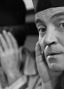

Also known as:Der schweigende Stern (original title)
Country:DDDE, 79 minutes
Spoken languages:German
Genres:Sci-Fi
Director(s):Kurt Maetzig
Writer(s):Stanislaw Lem, Jan Fethke, Wolfgang Kohlhaase, Günter Reisch, Günther Rücker
Video Codec:Unknown
Number: 1488


Certification:Unrated
Storyline:
When an alien artifact discovered on Earth is found to have come from Venus, an international team of astronauts embarks to investigate its origins.
Cast: 
Medium: Original DVD,
Loaned: No
Aspect ratio: Unknown